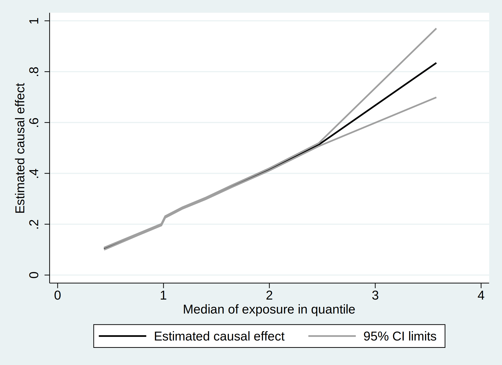
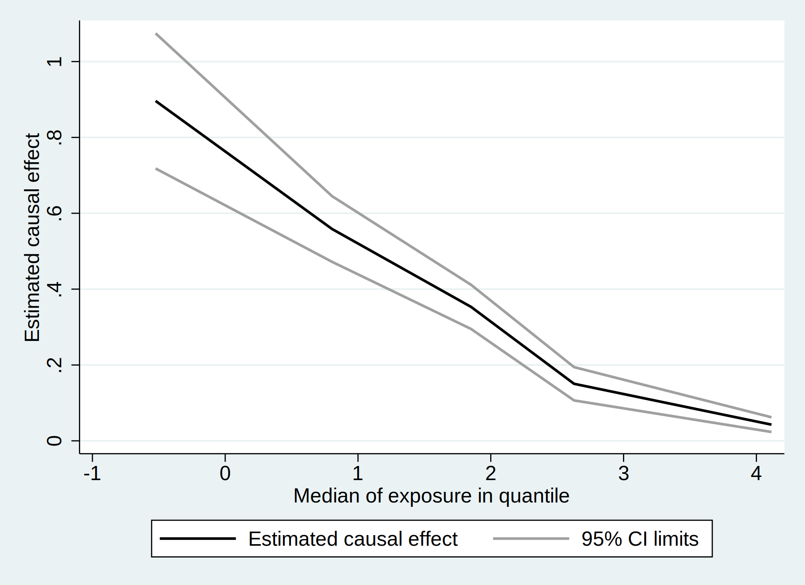

Quantile estimator
Read in simulated data with different outcome-exposure relationships;
y# outcome, x exposure, g
instrumental variable (genotype).
Plot outcome-exposure relationships


Use with different iv commands.
quantile beta se medendog lowci uppci
1 .1311195 .0015519 .6070275 .1280778 .1341611
2 .2131875 .0009425 .9969859 .2113403 .2150348
3 .2827527 .001016 1.343214 .2807613 .2847441
4 .3815383 .0015779 1.825639 .3784456 .384631
5 .6742788 .054497 2.897407 .5674646 .7810929 
quantile beta se medendog lowci uppci
1 .1037679 .0021337 .4384223 .0995859 .1079499
2 .1585745 .0015963 .7513582 .1554457 .1617032
3 .1981476 .0015735 .9798349 .1950635 .2012317
4 .2285919 .0015923 1.016022 .225471 .2317128
5 .263626 .0014932 1.178039 .2606993 .2665527
6 .3018492 .0016141 1.401061 .2986855 .3050129
7 .3490515 .0019169 1.642947 .3452945 .3528085
8 .4143449 .0022951 1.994051 .4098466 .4188433
9 .5128626 .0030473 2.466335 .5068899 .5188352
10 .8345693 .0691984 3.577371 .6989404 .9701982 
Some binary outcome examples.
ivxtile, nq(5) par(b1): ivtsps y (x = z1 z2 z3), link(logadd)
qui gr export ./img/ivxtile-plot-03.svg, replace quantile beta se medendog lowci uppci
1 .8962642 .0908862 -.5241845 .7181272 1.074401
2 .5585964 .0441663 .8047578 .4720304 .6451625
3 .3532819 .0297168 1.851269 .2950371 .4115268
4 .1504481 .0224022 2.627049 .1065397 .1943565
5 .0427768 .0098807 4.113728 .0234107 .062143 
ivxtile, nq(5) par(b1): ivtsps y (x = z1 z2 z3), link(logmult)
ivxtile, nq(5) par(b1): ivtsps y (x = z1 z2 z3), link(logit)
ivxtile, nq(5) par(b1): ivtsri y (x = z1 z2 z3), link(logadd)
ivxtile, nq(5) par(b1): ivtsri y (x = z1 z2 z3), link(logmult)
ivxtile, nq(5) par(b1): ivtsri y (x = z1 z2 z3), link(logit)
ivxtile, nq(5) par(x): ivlsmm y (x = z1 z2 z3)
ivxtile, nq(5) par(x): ivmsmm y (x = z1 z2 z3)Save the dataset of results.